Estructuras, Experiencias, Ejercicios
2026-09-10
Introducción al uso de registros nacionales de salud para investigación
Estructuras, Experiencias, Ejercicios
Septiembre 2026
Daniel R. Witte · Aarhus University / Steno Diabetes Center Aarhus
Cómo está organizado este curso01
Sesión Virtual (28-08-2026)
02
Sesión Presencial (10-09-2026)
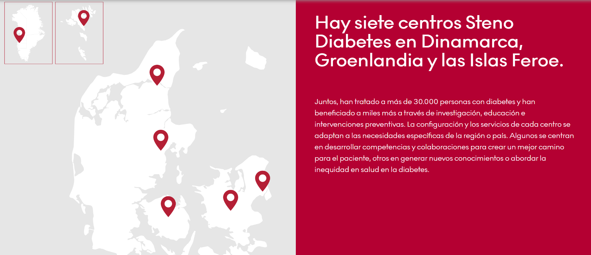
01
Presentación
02
Conceptos centrales
¿Qué es un registro?
03
Preparación para los ejercicios prácticos
Instalación del paquete estadístico R y paquetes de análisis específicos
04
Preguntas
¿Cuántas personas viven con diabetes y cuántas se diagnostican cada año?
Prevalencia e incidencia, por tipo (T1/T2), edad, sexo, territorio
Tasas totales, no una estimación basada en muestreo
¿Reciben la atención que deberían recibir?
Exámenes, controles, medicación:
¿Qué complicaciones desarrollan, y cuándo?
Retinopatía, nefropatía, amputaciones, eventos cardiovasculares, a lo largo del tiempo.
¿Cuánto antes mueren, y de qué?
Mortalidad, exceso de mortalidad y años de vida perdidos en comparación con la población general.
Ninguna de estas preguntas se responde completamente con una encuesta transversal ni con un ensayo clínico.
Una característica principal de los registros es la observación de una población completa, de forma continua, durante años.
El mismo registro puede servir para responder a preguntas distintas, según quién pregunte
| Nivel y usuario | La pregunta que hace | El producto que necesita |
|---|---|---|
| Gobierno nacional Ministerio, seguridad social |
¿Cuánta enfermedad hay, dónde y con qué desenlaces? ¿La política está funcionando? | Indicadores nacionales comparables en el tiempo, series de incidencia y mortalidad, proyecciones |
| Gobierno regional y local Secretarías, municipios |
¿Qué territorios están peor y dónde faltan servicios? | Tasas por distrito con denominadores poblacionales, mapas, comparación entre pares |
| Sistema de salud o asegurador | ¿Dónde se concentra el costo evitable y la brecha de atención? | Cohortes de riesgo, cobertura efectiva por prestador, costos atribuibles |
| Servicio o establecimiento | ¿Cómo estamos frente a centros comparables? | Tableros de proceso y resultado, con ajuste por composición de la población atendida |
| Profesional clínico | ¿Cuáles de mis pacientes están fuera de control o sin control anual? | Listas nominales accionables y comparación con sus pares — no un informe agregado |
| Universidad o equipo de investigación | ¿Qué causa qué? ¿Qué intervención funciona y en quién? | Microdatos seudonimizados, enlace con otras fuentes, años de historia, entorno seguro |
| Paciente y ciudadano | ¿Qué se sabe de mí, quién lo usa y para qué? ¿Cómo estoy frente a otros? | Acceso a sus propios datos, resultados agregados publicados, transparencia sobre los usos |
La respuesta depende del nivel: cada uno necesita información distinta y usa herramientas distintas
| Nivel | Necesidades de información | Herramientas |
|---|---|---|
| Global | Indicadores agregados por país y región | Informes mundiales (OCDE, OMS, Banco Mundial) |
| Nacional | Indicadores para planificación, mejora de la equidad, distribución de recursos | Informes nacionales (ministerios, bancos de datos, universidades) |
| Servicio de salud | Indicadores por centro y territorio para planificar y seguir la actividad | Informes, central de resultados |
| Organización sanitaria | Compras, gestión financiera, medicamentos, gestión de citas | Bases de datos y aplicaciones de gestión |
| Paciente | Cuidado del paciente | Historia clínica |
| Comunitario | Seguimiento de la población y cambios demográficos | Censo, registro civil, estadísticas de mortalidad |
Un sistema organizado que recoge datos uniformes sobre una población definida por una enfermedad, condición o exposición (EMA, 2021)
Un registro no es una base de datos. Es una base de datos más los seis elementos que la hacen interpretable, legítima, mantenible y accesible. Los proyectos fallan casi siempre por los seis, no por el primero.
Definición: EMA, Guideline on registry-based studies, EMA/426390/2021. · Estructura de componentes: Zaletel & Kralj (PARENT JA, 2015); Gliklich et al. (AHRQ, 4.ª ed., 2020).
Un registro se apoya en los seis; si falta uno, el registro no se sostiene
Recursos
Marco legal, normativa y planificación; personal, financiamiento, logística y tecnología.
Indicadores
Conjunto acordado de indicadores y metas, con sus definiciones, a lo largo de toda la cadena.
Fuentes de datos
Basadas en la población (censo, registro civil, encuestas) y en las instituciones (registros de servicios).
Gestión de datos
Recolección, almacenamiento, control de calidad, procesamiento, flujo y compilación.
Productos de información
El dato analizado y presentado como información procesable, no como archivo bruto.
Difusión y uso
Poner la información a disposición de quienes toman decisiones — y facilitar su uso.
Marco de la OMS/HMN para sistemas de información en salud.
| Componente | Qué incluye | Si falta… |
|---|---|---|
| Datos | Registros individuales, identificador, fechas, códigos; definición de caso explícita | No hay registro. Pero tener sólo esto es la situación más común |
| Metadatos | Diccionario de variables, catálogos de códigos, procedencia y linaje, versiones, unidades, valores permitidos | Nadie fuera del equipo original puede interpretar una variable; el análisis deja de ser reproducible |
| Documentación | Protocolo, manual de operaciones, algoritmo de caso, informes de calidad (conformidad, completitud, plausibilidad), historial de cambios | No se puede juzgar si el dato sirve para la pregunta; los sesgos se descubren después de publicar |
| Marco legal | Base jurídica para el uso secundario, protección de datos, consentimiento o su exención, obligación de reporte | El registro existe pero no se puede usar; o se usa en zona gris y cae en la primera auditoría |
| Marco institucional | Titular nombrado, responsable del tratamiento, financiamiento estable, gobernanza con los actores, plan de sostenibilidad | Nadie lo mantiene entre proyectos; se degrada al cambiar el gobierno, el equipo o el proveedor |
| Reglas de acceso | Criterios y formulario de solicitud, comité que aprueba, contratos, control de divulgación de resultados, plazos publicados | O no accede nadie, o accede quien conoce a alguien; ambas cosas destruyen la confianza |
| Infraestructura | Enlace de identificadores, entorno seguro de análisis, versionado, respaldo, seguridad, catálogo público de metadatos | El acceso depende de enviar copias por correo; se pierden la trazabilidad y la seguridad |
Síntesis a partir de Zaletel & Kralj (PARENT JA, 2015); EMA EMA/426390/2021, anexo de buenas prácticas; Gliklich et al. (AHRQ, 2020); Kahn et al., eGEMs 2016 (calidad de datos).
El marco de los «cinco seguros» (Five Safes), usado hoy por la mayoría de los entornos seguros de análisis
Proyectos seguros
¿El uso propuesto es legítimo y de interés público?
Personas seguras
¿Quién analiza está acreditado y formado?
Entornos seguros
¿Dónde se analiza impide copiar o extraer?
Datos seguros
¿El detalle entregado es el mínimo necesario?
Resultados seguros
¿Lo que sale del entorno es no divulgativo?
Dos exigencias complementarias. Los principios FAIR piden que el registro sea localizable, accesible, interoperable y reutilizable — lo que en la práctica significa un catálogo público de metadatos aunque los datos individuales nunca salgan. La Recomendación de la OCDE sobre gobernanza de datos de salud pide además coordinación entre custodios, estándares comunes y procedimientos que reduzcan las barreras al uso legítimo.
Desai, Ritchie & Welpton, Five Safes, UWE Working Papers in Economics 1601, 2016. · Wilkinson et al., Sci Data 2016;3:160018. · OCDE, OECD/LEGAL/0433, 2017.
El mismo registro, exigencias incompatiblesLatencia, agregación y vía de entrega cambian según el usuario — y no se pueden optimizar todas a la vez
| Usuario | Latencia aceptable | Nivel de agregación | Vía de entrega |
|---|---|---|---|
| Gobierno nacional | Anual | País y región | Informe público y tablero abierto |
| Gobierno regional y local | Trimestral | Distrito y establecimiento | Tablero territorial, informe periódico |
| Asegurador o red | Mensual | Afiliado y prestador | Sistema de gestión interno |
| Establecimiento | Mensual o semanal | Paciente, dentro del centro | Reporte devuelto al centro |
| Profesional clínico | Días o tiempo real | Paciente nominal | La propia historia clínica, no el registro |
| Investigación | Anual, pero con décadas de historia | Microdatos seudonimizados | Solicitud formal y entorno seguro |
| Paciente y ciudadano | Cuando lo solicite | Sus propios datos, más agregados públicos | Portal o derecho de acceso |
Cuanto más cerca del paciente, menor latencia y mayor identificabilidad; cuanto más lejos, más agregación y más historia. Ningún sistema único sirve a todos: por eso el registro y la historia clínica conviven en lugar de competir.
El nivel que casi nunca aparece en el diseño — y del que depende la licencia social del registro
Acceso a los propios datos
La normativa de protección de datos convierte al paciente en usuario con derecho de acceso. Si el registro no puede responder «¿qué tiene usted sobre mí?», tiene un problema legal, no sólo comunicacional.
Retorno de resultados agregados
Publicar qué se encontró, en lenguaje llano y con regularidad. Es lo que convierte la recolección en un intercambio y no en una extracción.
Participación en la gobernanza
La Recomendación de la OCDE pide consulta pública y participación de los interesados para que el uso de datos personales de salud sea coherente con las expectativas razonables de las personas.
Confianza como infraestructura
La confianza sostiene el marco legal. Cuando se pierde — por una filtración o por un uso no anunciado — se pierde también la base política del registro.
OCDE, Recommendation of the Council on Health Data Governance, OECD/LEGAL/0433, 2017.
Registro sanitario ≠ historia clínica electrónicaLas dos diferencias que más consecuencias tienen: a quién cubre y cuándo está disponible
| Dimensión | Historia clínica electrónica (hospital o red) | Registro sanitario |
|---|---|---|
| Propósito | Atender a este paciente hoy. Uso primario: es una herramienta de trabajo clínico y de facturación | Describir a una población en el tiempo. Uso secundario de datos que ya existen |
| Cobertura | Quien consulta en esa red: población afiliada o usuaria de un prestador. El resto es invisible | Población definida a priori: todos los residentes de un territorio, o todos los casos que cumplen la definición |
| Denominador | No existe. No se sabe quién no consultó, ni cuántos son | Explícito: censo, padrón o registro civil. Sin denominador no hay tasa |
| Actualidad | Casi tiempo real: el dato está disponible en el momento de la atención | Actualización mensual, trimestral o anual, tras la extracción, el enlace y el control de calidad |
| Longitudinalidad | Se corta al cambiar de prestador, de asegurador o de ciudad | Continua mientras exista el identificador, aunque la persona cambie de prestador |
Casey JA, et al. Annu Rev Public Health 2016;37:61–81. · Porto Alegre ilustra la restricción de cobertura: sólo servicios del SUS, con ~49 % de la población dependiendo exclusivamente de ese sistema.
| Dimensión | Historia clínica electrónica | Registro sanitario |
|---|---|---|
| Definición de caso | Implícita: la que escribió cada clínico, con variabilidad entre miles de profesionales | Explícita, algorítmica, versionada y reproducible por terceros |
| Estandarización | Catálogos y campos propios del proveedor de software; a menudo texto libre | Semántica común acordada: CIE, CIAP, ATC, unidades y valores permitidos |
| Riqueza del contenido | Muy alta: notas, imágenes, evolución clínica — pero poco estructurada | Más pobre en detalle, pero comparable, documentada y analizable |
| Calidad y sesgo | Completitud no aleatoria: los pacientes más enfermos generan más datos | La calidad se mide y se publica: conformidad, completitud y plausibilidad |
| Gobernanza y acceso | Del prestador; acceso caso a caso, sin reglas publicadas | Titular nombrado, base legal y procedimiento de acceso conocido de antemano |
| Estabilidad | Cambia — o se pierde — al cambiar de proveedor de software | Diseñado para sobrevivir al proveedor, al equipo y al gobierno de turno |
Weiskopf NG, Rusanov A, Weng C. AMIA Annu Symp Proc 2013:1472–7. · Kahn MG, et al. eGEMs 2016;4(1):1244. · Casey JA, et al. Annu Rev Public Health 2016;37:61–81.
Por qué no basta con «sacar indicadores de la historia clínica»
Ausencia de denominador
Quien no consulta no existe en el sistema. La prevalencia calculada sobre la población atendida no es la prevalencia poblacional, y el sesgo es mayor justamente donde hay menos acceso.
Haneuse & Daniels, eGEMs 2016
Presencia informada
Estar en la historia clínica no es aleatorio: indica que la persona está enferma. Y quien tiene más contactos acumula más diagnósticos y más mediciones, lo que distorsiona las asociaciones.
Goldstein BA, et al. Am J Epidemiol 2016;184:847–55
Completitud no aleatoria
Los pacientes más enfermos tienen más datos. Un valor faltante no es ruido: es información sobre el proceso de atención, y tratarlo como faltante al azar sesga el resultado.
Weiskopf, Rusanov & Weng, AMIA 2013
Lo que aporta el registro frente a esto: un denominador poblacional, una definición de caso explícita y el enlace con mortalidad y con otras fuentes.
No compiten: la historia clínica alimenta al registroLa pregunta útil no es «¿registro o historia clínica?». Es qué extracción, con qué periodicidad y con qué reglas convierte lo que la historia clínica ya produce en algo que sirva a los demás niveles. Porto Alegre es exactamente esa arquitectura: ocho sistemas transaccionales del SUS alimentando un registro poblacional.
Sostenibilidad
Un registro no se «termina». El equipo de Porto Alegre es explícito: mantenerlo exige recursos futuros, y por eso la Secretaría Municipal de Salud y la UFRGS montaron un acuerdo permanente en lugar de un proyecto.
Fragilidad institucional
La Cuenta de Alto Costo de Colombia opera desde 2008 por resolución. En 2026 una nueva resolución reorganizó el reporte de enfermedades de alto costo y organizaciones de pacientes advirtieron públicamente sobre la pérdida de 18 años de análisis independiente. Sólido técnicamente ≠ seguro institucionalmente.
Retorno de información
Si el dato no vuelve a quien lo digita (el clínico) ni a quien lo genera (el paciente), su calidad cae. El feedback no es cortesía: es infraestructura del registro.
Colombia: Resolución 4700 de 2008 (mod. 2463 de 2014) y Resolución 1563 de 2026, MinSalud. Porto Alegre: Dal Moro et al., J Clin Med 2024;13:2783.
Preparación para ejercicio práctico
TODO: update these.
TODO: Add more slides as desired or needed.
:::::::::::::
:::::::::::::::